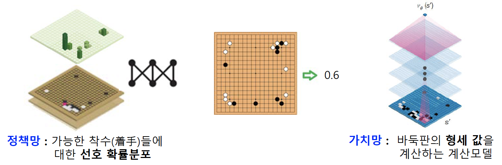

7th
알파고의 탐색
알파고의 Monte Carlo tree 검색
- 바둑판 형세 판단을 위한 한 가지 방법으로 Monte Carlo tree 검색 사용
- 무작위로 바둑을 두는 것이 아니라, 프로 바둑기사들의 기보를 학습한 확장 정책망 (rollout policy network)이라는 간단한 계산 모델을 사용
- 확률에 따라 착수를 하여 Monte Carlo simulation을 반복하여 해당 바둑판에 대한 형세판단값 계산
- 별도로 학습된 딥러닝 신경망인 가치망 (value network)을 사용하여 형세판단값을 계산하여 함께 사용

많은 수의 Monte Carlo simulation과 딥러닝 모델의 신속한 계산을 위해 다수의 CPU, GPU를 이용한 분산처리

게임에서의 탐색
- game tree
- mini-max algorithm
- \(\alpha-\beta\) 가지치기
- Monte Carlo simulation
- Monte Carlo tree 탐색
- 알파고의 탐색
제약조건 만족 문제 (constraint satisfaction problem)
주어진 제약조건을 만족하는 조합해 (combinatorial solution)를 찾는 문제
탐색 관점에서 볼 때 목표상태는 제약조건을 모두 만족해야 함
문제 영역의 변수 (domain variable), 변수가 가질 수 있는 후보 값의 집합, 제약조건들로 정의됨

탐색 기반의 해결방법
- 백트래킹 탐색
- 제약조건 전파
백트래킹 탐색 (backtracking search)
DFS를 하는 것처럼 변수에 허용되는 값을 하나씩 대입
모든 가능한 값을 대입해서 만족하는 것이 없으면 이전 단계로 돌아가서 이전 단계의 변수에 다른 값을 대입
백트레킹 탐색을 이용한 4-queen problem

제약조건 전파 (constraint propagation)
인접 변수 간의 제약 조건에 따라 각 변수에 허용될 수 없는 값들을 제거하는 방식


최적화 (optimization)
여러가지 허용되는 값들 중에서 주어진 기준을 가장 잘 만족하는 것을 선택하는 것
목적함수 (objective function)
- 최소 또는 최대가 되도록 만들려는 함수
조합 최적화
- 유전 알고리즘
함수 최적화
- 최대 경사법
- 제약함수 최적화
조합 최적화 (combinational optimization)
순회 판매자 문제 (TSP)와 같이 주어진 항목들의 조합으로 해가 표현되는 최적화 문제

유전 알고리즘 (genetic algorithm, GA)
생물의 진화를 모방한 집단 기반의 확률적 탐색 기법 (John Holland, 1975)
대표적인 진화 연산 (evolutionary computation)의 하나
- 유전 알고리즘, 유전자 프로그래밍 (genetic programming), 진화 전략 (evolutionary strategy)
생물의 진화
- 염색체 (chromosome)의 유전자 (gene)들이 개체 정보 코딩
- 적자생존 (fiitest survival) / 자연선택 (natural selection)
- 환경에 적합도가 높은 개체의 높은 새존 및 후손 번성 가능성
- 우수 개체들의 높은 자손 증식 기회
- 열등 개체들도 작지만 증식 기회
- 집단 (population)의 진화
- 세대 (generation) 집단의 변화
- 형질 유전과 변이
- 부모 유전자들의 교차 (crossover) 상속
- 돌연변이 (mutation)에 대한 변이

후보해 (candidate solution) 표현
염색체 (chromosome) 표현

모집단 (population)
- 동시에 존재하는 염색체들의 집합
적합도 함수 (fitness function)
- 후보해가 문제의 해 (solution)로서 적합한 정도를 평가하는 함수